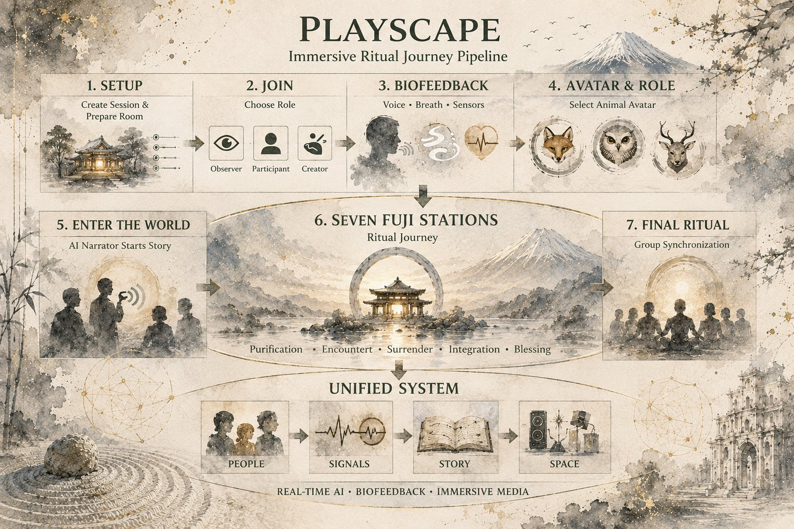

Transforming places and spaces into participatory story portals — where groups become living cultural feedback systems.
A techno-social platform transforming physical places and virtual spaces into participatory story portals.
Groups enter living symbolic worlds to rehearse future scenarios, explore cultural memory, and engage mythic wisdom together.
Story as Medicine Modern FormCollective performance and collaborative choice-making generate meaning, empathy, and social learning that no individual can create alone.
Bodies and nervous systems reveal what is actually happening in real time — grounding the experience in resilience rather than abstraction.
The emerging social field translated into narrative sense-making — helping people see what is happening between them with clarity and compassion.
A shared arc of intention, symbol, and commitment links people to one another, to place, and to a larger order of meaning.
Modern life often fragments people across four breaks. These are the four ruptures we are here to practice healing — by moving through them together.
The body carries stress and truth that goes unheard. We have become strangers to our own nervous systems.
Low trust, isolation, polarization, performance culture. We perform connection without actually touching.
Nature reduced to backdrop or resource. We have forgotten that we are nature — not guests in it.
Tools shape attention faster than wisdom can guide them. Technology without ritual becomes noise.
The group learns to sense what is happening — in the self, in relationship, and in place.
Notice reactivity. Regulate enough to stay present and connected.
The group makes choices together and enacts them through participatory story and performance.
The group receives a mirror — narrative reflection — so patterns become visible.
Sensing, regulation, action, and reflection align around shared values and intention.
Collective performance generates shared meaning, empathy, and social learning that emerges from the group itself.
Psychosomatic feedback reveals real-time nervous-system response, grounding the work in resilience.
AI-generated reflections translate the emerging social field into narrative sense-making with clarity and compassion.
Ritual alignment and mythic framing provide symbolic coherence and relationship to a larger order of meaning.
Participants move through a portal journey:
A physical place woven with a virtual layer. The threshold between ordinary time and sacred play.
A shared question, value, or collective need. The group names what it is here to practice.
Psychosomatic feedback and group presence reveal what is actually happening beneath the surface.
AI reflects emerging patterns as narrative. The group sees itself through a new kind of lens.
Participants take roles, make choices, improvise, and act together. Story becomes a practice space for real life.
A gesture, vow, offering, or closing action gives the insight a body. The learning is sealed.
Each participant leaves with one value-aligned commitment. The portal closes; the practice continues.
The first portal is not simply a prototype launch. It is the ceremonial beginning of a new medium for practicing relational coherence — through story, ritual, AI reflection, embodiment, and collective play.
2026 marks the thousandth moon since Hiroshima and Nagasaki — a symbolic return: a moment to gather intelligence, creativity, technology, and human attention toward creation rather than destruction.
The first vibration of the portal matters. It should begin grounded, reverent, joyful, and aligned.
Fuji carries millennia of human devotion and natural power — the ideal ground for a first vibration.
Devoted to harmony, prayer, and the possibility that people can choose creation over destruction.
Physical in Japan, virtual worldwide — a modern caravanserai on the Silk Roads of meaning.
An active, ongoing field where the conditions for coherence already exist and are practiced daily.

Like the ancient caravanserais along the Silk Roads, Fuji Sanctuary becomes a meeting place where cultures, technologies, rituals, stories, and ways of sensing the world gather and exchange wisdom.
The worlds we inhabit are shaped
by the stories we practice together.
Physical · Japan · Virtual · Worldwide · 2026
The aim is not only to create a meaningful experience.
The aim is to help groups practice becoming more coherent, self-aware, and capable of value-aligned action.
Changes in psychosomatic coherence before and after the experience — measurable through biofeedback signals.
Shifts in group coordination and participation — tracked through role engagement and collective decision patterns.
Clarity of collective insight outputs — including themes, stories, and AI-generated narrative reflections produced.
Commitments made and actions taken after the portal closes — the measure that matters most.
Radiant IRIS · Playscape Portals · 2026